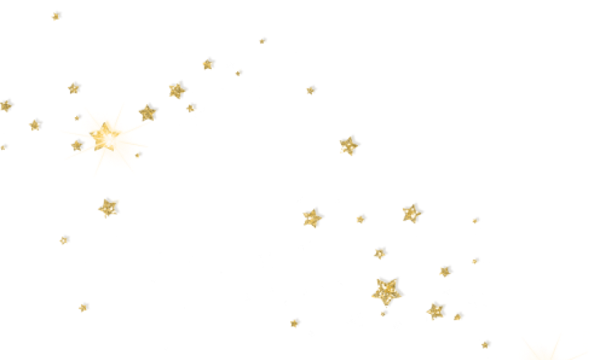

Ранее, Easy Stars предлагала уникальный функционал для автоматизации трафика социальных сетей, как прикладной инструмент заработка пользователей в интернете и преимущество партнерской программы, а также систематизации потока пользователей для удобства партнеров.
На данный момент, Quasar Technology, перенял лучшее наследие от Easy Stars, понимая свое превосходство и уникальность технологии на рынке.
Quasar Technology теперь является полноценным разработчиком программного обеспечения на международном рынке.
Предыдущие достижения и опыт компании хоть и были беспрецедентны, но все равно являлись лишь малой частью того, что реализует и планирует развивать компания Quasar Technology в дальнейшем.
Всё, на что способна ваша фантазия!
Ваш бизнес нуждается в новых клиентах, интересных приложениях и технологиях.
Возможно, вы ещё только задумываетесь о применении технологии, но не знаете, как её использовать. Мы предложим решение, которое, возможно, вы не видели до этого.
Первый отзыв от президента Grid Group Company. Собственник крупной международной строительной компании (5 000 объектов коммерческой недвижимости по всему миру. Разработчик собственной криптовалюты. Собственник крипто биржи.
